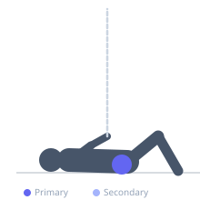
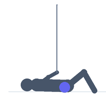

Exercise guide / Side-Lying Leg Raise — Toe Down
Side-Lying Leg Raise — Toe Down
A side-lying hip abduction exercise performed with the foot internally rotated (toe pointing toward the floor). This internal rotation position preferentially activates the gluteus medius over the tensor fasciae latae (TFL), which is important in rehabilitation programs targeting IT band syndrome or TFL dominance. The exercise isolates the posterior gluteus medius fibers and is a key component of hip abduction rehabilitation.
Primary muscles
gluteus medius
gluteus minimus
Secondary muscles
Stabilizers
transverse abdominis
Equipment
No Equipment (Bodyweight)
Optional
Resistance Band (Loop / Mini Band)


Starting position
- Lie on your side with your body in a straight line, bottom arm extended and head resting on it. Internally rotate the top leg so the toes point toward the floor (not the ceiling).
Setup
- No equipment needed. A resistance band above the knees can be added for greater challenge. Ensure the spine stays neutral throughout.
Steps
- Step 1: Lie on your side with hips stacked and the top foot internally rotated so toes face the floor.
- Step 2: Keeping the leg straight and internally rotated, raise the top leg upward to approximately 30-45 degrees.
- Step 3: Hold the top position briefly, maintaining the internal rotation throughout.
- Step 4: Lower the leg slowly back to the starting position. Complete all reps before switching sides.
Coaching cues
- Imagine the bottom of the foot is facing the ceiling — it should be facing the floor throughout the movement
- The small range of motion is correct — do not force height
- Feel the outer hip (gluteus medius) contracting, not the front of the hip (TFL)
Breathing
- Exhale as you raise the leg. Inhale as you lower.
Range of motion
- Lift to approximately 30-45 degrees. The foot must stay internally rotated throughout the entire range.
Tempo
- 2s raise, 1s hold, 3s lower
Common mistakes
- Allowing the foot to rotate outward (externally) during the raise — this recruits TFL instead of posterior glute med
- Rotating the entire pelvis backward as the leg rises — the hip must remain stacked
- Lifting too high, which causes lumbar spine compensation
Safety
- If you have an IT band syndrome diagnosis, ensure this is prescribed by a physiotherapist as part of a structured program
- Avoid if internal hip rotation is acutely painful
Training
- endurance: 12–20 reps
- mobility: 10–15 reps
- endurance: 2–3 sets
- mobility: 2–3 sets
- Rest: {'endurance': 45, 'mobility': 60}